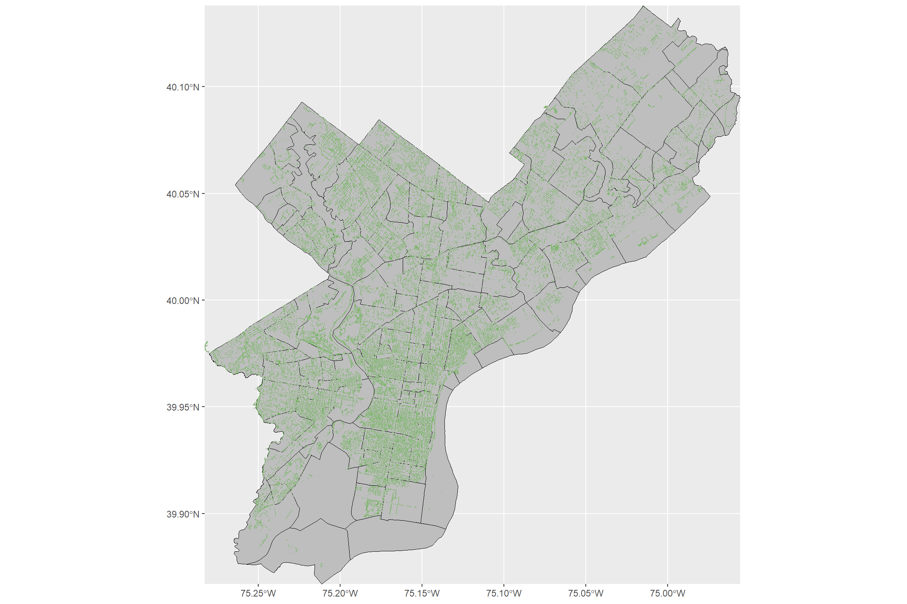
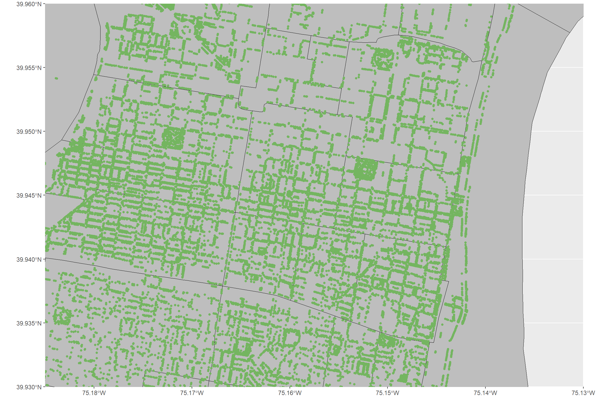
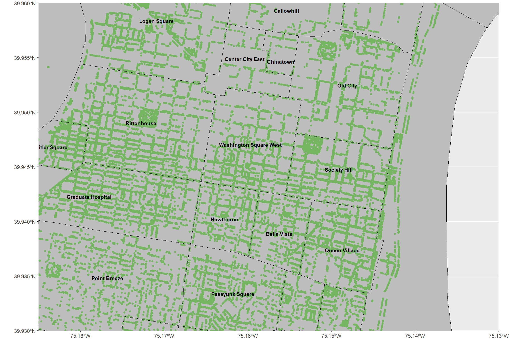
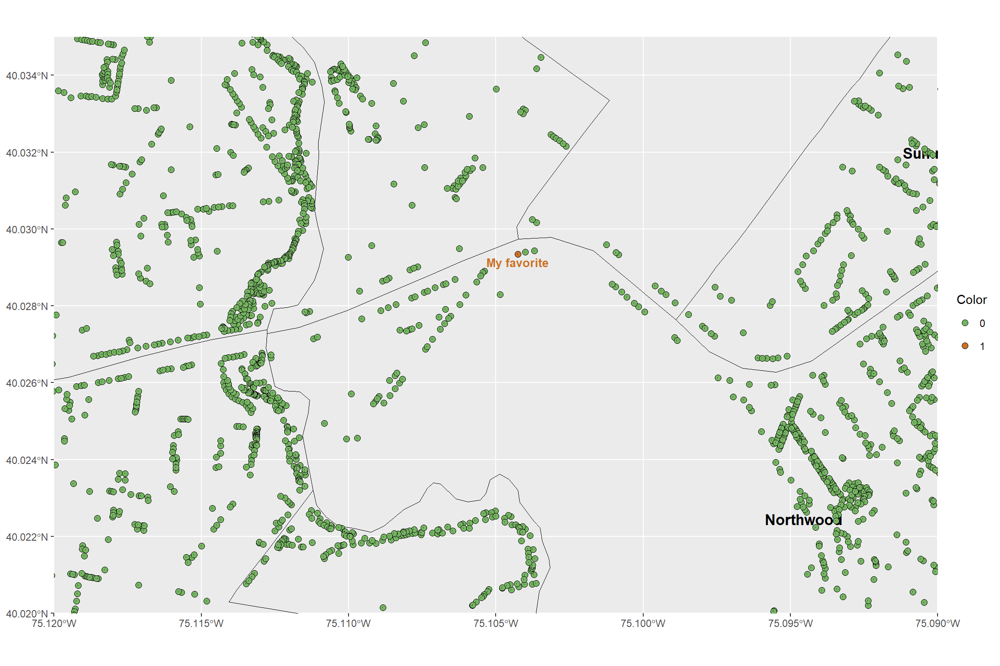
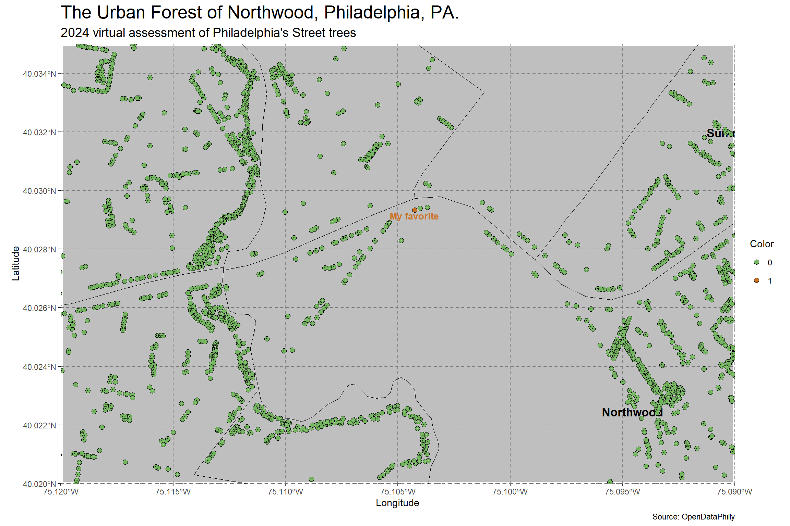
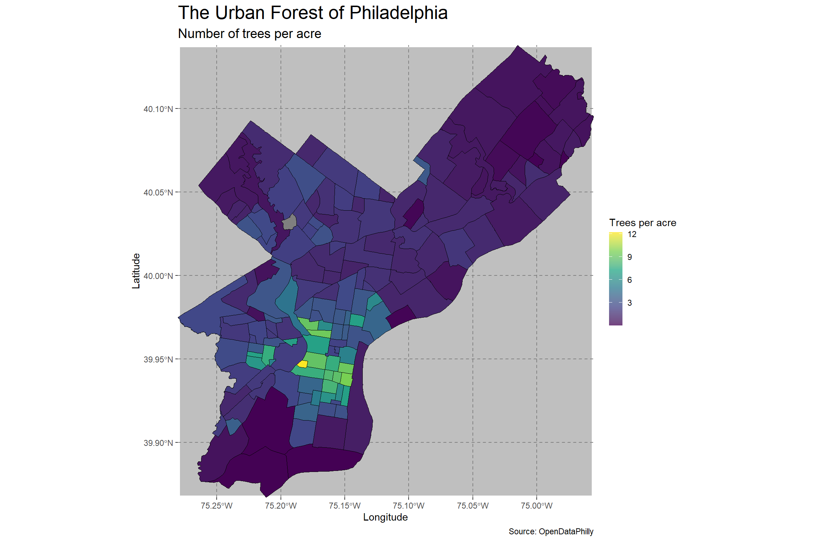

library(here)
library(data.table)
library(magrittr)
library(ggplot2)
library(sf)
library(rnaturalearth)
library(devtools)
library(kableExtra)Part 2: Making maps with ggplot2
This is part 2 of the 3 part series.
Setup
Load the required R packages from CRAN and github.
From CRAN:
From github:
devtools::install_github("deandevl/RspatialPkg")Define the file path to the shapefiles folder at the root of this Rstudio project for holding downloaded shapefiles:
shapefile_directory <- file.path(here(), "shapefiles")Review: Load and clean data
The first dataset is a .geojson file containing geospatial descriptions of Philadelphia’s neighborhoods, courtesy of OpenDataPhilly. This dataset is polygon data and will form our basemap for layering on additional, more interesting, features.
The second dataset, also courtesy of OpenDataPhilly is our dataset of interest: a 2024 inventory of all of the trees in Philadelphia. This dataset is point data, where each tree has associated coordinates for identifying its precise location.
Load the data
Read in the Philadelphia neighborhood data.
neighborhoods_file_path <- file.path(here(), "data", "philadelphia-neighborhoods.geojson")
neighborhoods_raw_sf <- sf::read_sf(neighborhoods_file_path)
sf::st_crs(neighborhoods_raw_sf) = 4326| NAME | LISTNAME | MAPNAME | Shape_Leng | Shape_Area | geometry |
|---|---|---|---|---|---|
| BRIDESBURG | Bridesburg | Bridesburg | 27814.55 | 44586264 | MULTIPOLYGON (((-75.06773 4... |
| BUSTLETON | Bustleton | Bustleton | 48868.46 | 114050424 | MULTIPOLYGON (((-75.0156 40... |
| CEDARBROOK | Cedarbrook | Cedarbrook | 20021.42 | 24871745 | MULTIPOLYGON (((-75.18848 4... |
| CHESTNUT_HILL | Chestnut Hill | Chestnut Hill | 56394.30 | 79664975 | MULTIPOLYGON (((-75.21221 4... |
| EAST_FALLS | East Falls | East Falls | 27400.78 | 40576888 | MULTIPOLYGON (((-75.18476 4... |
| MOUNT_AIRY_EAST | Mount Airy, East | East Mount Airy | 28845.55 | 43152470 | MULTIPOLYGON (((-75.18087 4... |
Read in the Philadelphia tree data.
trees_file_path <- file.path(here(), "data", "ppr_tree_inventory_2024.csv")
trees_raw_sf <- sf::read_sf(trees_file_path) %>%
data.table::as.data.table(.) %>%
.[, `:=`(loc_x = as.numeric(loc_x), loc_y = as.numeric(loc_y))] %>%
sf::st_as_sf(., coords = c("loc_x","loc_y"))
sf::st_crs(trees_raw_sf) = 4326 | X | Y | objectid | tree_name | tree_dbh | year | geometry |
|---|---|---|---|---|---|---|
| -8369286.62738524 | 4856867.3859829 | 1 | ACER PLATANOIDES - NORWAY MAPLE | 13 | 2024 | POINT (-75.18258 39.93751) |
| -8368484.91003424 | 4857247.60294763 | 2 | ACER PLATANOIDES - NORWAY MAPLE | 16 | 2024 | POINT (-75.17538 39.94013) |
| -8368573.28327579 | 4857533.37906856 | 3 | ACER PLATANOIDES - NORWAY MAPLE | 11 | 2024 | POINT (-75.17617 39.9421) |
| -8369018.20752659 | 4857334.00314431 | 4 | SOPHORA JAPONICA - JAPANESE PAGODA TREE | 16 | 2024 | POINT (-75.18017 39.94073) |
| -8368196.28454208 | 4857325.20869328 | 5 | OSTRYA VIRGINIANA - EASTERN HOP HORNBEAM | 2 | 2024 | POINT (-75.17278 39.94067) |
| -8368169.44953092 | 4857418.7633857 | 6 | ACER RUBRUM - RED MAPLE | 5 | 2024 | POINT (-75.17254 39.94131) |
Clean the data
In the neighborhood data, rename columns; add “Area” column which converts square footage to acres.
neighborhoods_raw_sf <- data.table::as.data.table(neighborhoods_raw_sf) %>%
data.table::setnames(., old = "MAPNAME", new ="Label") %>%
.[, Area := Shape_Area/43560] %>%
sf::st_as_sf(.)Simple feature collection with 6 features and 6 fields
Geometry type: MULTIPOLYGON
Dimension: XY
Bounding box: xmin: -75.23049 ymin: 39.98491 xmax: -75.0156 ymax: 40.11269
Geodetic CRS: WGS 84
NAME LISTNAME Label Shape_Leng Shape_Area
1 BRIDESBURG Bridesburg Bridesburg 27814.55 44586264
2 BUSTLETON Bustleton Bustleton 48868.46 114050424
3 CEDARBROOK Cedarbrook Cedarbrook 20021.42 24871745
4 CHESTNUT_HILL Chestnut Hill Chestnut Hill 56394.30 79664975
5 EAST_FALLS East Falls East Falls 27400.78 40576888
6 MOUNT_AIRY_EAST Mount Airy, East East Mount Airy 28845.55 43152470
Area geometry
1 1023.5598 MULTIPOLYGON (((-75.06773 4...
2 2618.2375 MULTIPOLYGON (((-75.0156 40...
3 570.9767 MULTIPOLYGON (((-75.18848 4...
4 1828.8562 MULTIPOLYGON (((-75.21221 4...
5 931.5172 MULTIPOLYGON (((-75.18476 4...
6 990.6444 MULTIPOLYGON (((-75.18087 4...In the tree data, rename a column.
trees_raw_sf <- data.table::as.data.table(trees_raw_sf) %>%
data.table::setnames(., old = "objectid", new = "Tree_ID") %>%
.[, Tree_ID := as.numeric(Tree_ID)] %>%
sf::st_as_sf(.)Simple feature collection with 6 features and 6 fields
Geometry type: POINT
Dimension: XY
Bounding box: xmin: -75.18258 ymin: 39.93751 xmax: -75.17254 ymax: 39.9421
Geodetic CRS: WGS 84
X Y Tree_ID
1 -8369286.62738524 4856867.3859829 1
2 -8368484.91003424 4857247.60294763 2
3 -8368573.28327579 4857533.37906856 3
4 -8369018.20752659 4857334.00314431 4
5 -8368196.28454208 4857325.20869328 5
6 -8368169.44953092 4857418.7633857 6
tree_name tree_dbh year
1 ACER PLATANOIDES - NORWAY MAPLE 13 2024
2 ACER PLATANOIDES - NORWAY MAPLE 16 2024
3 ACER PLATANOIDES - NORWAY MAPLE 11 2024
4 SOPHORA JAPONICA - JAPANESE PAGODA TREE 16 2024
5 OSTRYA VIRGINIANA - EASTERN HOP HORNBEAM 2 2024
6 ACER RUBRUM - RED MAPLE 5 2024
geometry
1 POINT (-75.18258 39.93751)
2 POINT (-75.17538 39.94013)
3 POINT (-75.17617 39.9421)
4 POINT (-75.18017 39.94073)
5 POINT (-75.17278 39.94067)
6 POINT (-75.17254 39.94131)Geospatial layers in ggplot2
Your first map
Map the two simple features by layering trees sf over the neighborhoods sf.
RspatialPkg::get_geom_sf(
sf = neighborhoods_raw_sf
) %>%
RspatialPkg::get_geom_sf(
gg = .,
sf = trees_raw_sf,
sf_color = "#74b560"
)
Zoom in on a region of interest
Zoom in on a region of interest
By default, ggplot2 will zoom out so that all of the mapping objects are in the image. Suppose, however, that we are interested in a smaller region of the map: Center City Philadelphia.
We can use
ggplot2::coord_sf()to specify the coordinates to display. By default,geom_sf()callscoord_sf()in the background, but by explicitly calling it ourselves, we can override the default parameters. Below, we will specify our latitude and longitude, and setexpand = FALSE. By default, expand is true, which puts a small buffer around the coordinates we specify. It’s an aesthetic choice.
If you recall from Part 1 of this series, the CRS is the ellipsoid and datum used to reference points on the globe. ggplot2 will take the first CRS provided (in this case, in our neighborhoods dataset) and ensure that all subsequent layers use the same CRS. It automatically converts any mismatched CRSs to the first one provided. Using
coord_sf(), we have options to change the CRS and the datum. Changing the datum won’t affect plotting, but will affect where graticules (latitude/longitude lines) are drawn if you choose to include them. By default, ggplot2 draws graticules using WGS 84 (EPSG: 4326), which happens to be the CRS of our two datasets. If we had needed to, we could have changed to NAD 83 (EPSG: 4269) using datum = sf::st_crs(4269).
RspatialPkg::get_geom_sf(
sf = neighborhoods_raw_sf,
) %>%
RspatialPkg::get_geom_sf(
gg = .,
sf = trees_raw_sf,
sf_color = "#74b560",
sf_fill = "#74b560",
sf_size = 1.6,
xlim = c(-75.185, -75.13),
ylim = c(39.93, 39.96)
)
Add labels for clearer communication
Now that we have zoomed in to a smaller region, we have space on our map to add labels.
Use the “Label” column from our neighborhoods_raw_sf simple feature to label the zoomed suburbs.
RspatialPkg::get_geom_sf(
sf = neighborhoods_raw_sf
) %>%
RspatialPkg::get_geom_sf(
gg = .,
sf = trees_raw_sf,
sf_color = "#74b560",
sf_fill = "#74b560",
sf_size = 1.6
) %>%
RspatialPkg::get_geom_sf(
gg = .,
sf = neighborhoods_raw_sf,
aes_text = "Label",
text_fontface = "bold",
text_check_overlap = T,
sf_alpha = 0,
xlim = c(-75.185, -75.13),
ylim = c(39.93, 39.96)
)
Add highlights and annotations
I want to highlight and annotate my favorite tree. Since the highlight rule needs to be determined tree-by-tree, we need to adjust our simple features object and add an appropriate aesthetic call to our plot. First we adjust our simple features object by adding columns for the color group and the label text. Then, we adjust our plot by including aes(color = Color) to define color groups and simultaneously adding
scale_color_manual()to specify the colors we want for each group. At the same time, we optionally setshow.legend = FALSEto hide the legend. We also add the label text usinggeom_sf_label()using the aes(label = Label) to specify the text and other parameters to adjust how it appears on the plot.
Add “Color” and “Label” columns to trees_raw_sf simple feature and map to highlight a favorite tree.
Add the two new columns where “Color” is a numeric factor taking on values 1 or 0 and “Label” with “My favorite” or blank character string depending on “Tree_ID:
trees_highlight_sf <- data.table::as.data.table(trees_raw_sf) %>%
.[, `:=`(
#Color = ifelse(Tree_ID == 39547, "#cb7123", "#74b560"),
Color = ifelse(Tree_ID == 39547, 1, 0),
Label = ifelse(Tree_ID == 39547, "My favorite", "")
)] %>%
.[, Color := as.factor(Color)] %>%
sf::st_as_sf(.)Map with the new color and labels:
RspatialPkg::get_geom_sf(
sf = neighborhoods_raw_sf,
aes_text = "Label",
text_fontface = "bold",
text_size = 4.5,
show_legend = F,
sf_alpha = 0
) %>%
RspatialPkg::get_geom_sf(
gg = .,
sf = trees_highlight_sf,
aes_fill = "Color",
own_scale = T,
sf_size = 2.5
) %>%
RspatialPkg::get_geom_sf(
gg = .,
sf = trees_highlight_sf,
aes_text = "Label",
text_color = "#cb7123",
text_fontface = "bold",
text_size = 3.5,
text_nudge_y = -0.0002,
xlim = c(-75.12, -75.09),
ylim = c(40.02, 40.035)
) +
ggplot2::scale_fill_manual(values = c("#74b560", "#cb7123"))
Final beautification
Add titles, source note, background color.
RspatialPkg::get_geom_sf(
sf = neighborhoods_raw_sf,
aes_text = "Label",
text_fontface = "bold",
text_size = 4.5,
show_legend = F,
sf_alpha = 0,
panel_color = grey(0.75),
panel_border_color = "white",
title = "The Urban Forest of Northwood, Philadelphia, PA.",
subtitle = "2024 virtual assessment of Philadelphia's Street trees",
caption = "Source: OpenDataPhilly",
x_title = "Longitude",
y_title = "Latitude"
) %>%
RspatialPkg::get_geom_sf(
gg = .,
sf = trees_highlight_sf,
aes_fill = "Color",
own_scale = T,
sf_size = 2.5
) %>%
RspatialPkg::get_geom_sf(
gg = .,
sf = trees_highlight_sf,
aes_text = "Label",
text_color = "#cb7123",
text_fontface = "bold",
text_size = 3.5,
text_nudge_y = -0.0002,
xlim = c(-75.12, -75.09),
ylim = c(40.02, 40.035)
) +
ggplot2::scale_fill_manual(values = c("#74b560", "#cb7123")) +
ggplot2::theme(
panel.grid.major = ggplot2::element_line(
color = gray(0.5), linetype = "dashed", size = 0.5
)
)
Choropleths in ggplot2
…the concept of a “choropleth” map, which colors regions to represent a statistical variable. For instance, we may want to color our neighborhoods by the number of trees in each, or (more appropriately) the number of trees per acre.
Merge and clean data
Join neighborhoods_raw_sf and trees_raw_sf via `sf::st_join().
neighborhoods_valid_raw_sf <- sf::st_make_valid(neighborhoods_raw_sf)
neigh_tree_join_sf <- sf::st_join(neighborhoods_valid_raw_sf, trees_raw_sf)Convert the join to a data.table, group, and create “Density” variable.
neighborhoods_raw_dt <- data.table::as.data.table(neighborhoods_raw_sf)
count_density_sf <- data.table::as.data.table(neigh_tree_join_sf) %>%
.[, .N, by = .(NAME, Area)] %>%
.[, Density := N/Area] %>%
neighborhoods_raw_dt[., on = c("NAME", "NAME")] %>%
sf::st_as_sf(.)Use the “Density” (trees per acre) variable to produce a choropleth map across the neighborhoods of Philadelphia, PA
RspatialPkg::get_geom_sf(
sf = count_density_sf,
aes_fill = "Density",
own_scale = T,
title = "The Urban Forest of Philadelphia",
subtitle = "Number of trees per acre",
x_title = "Longitude",
y_title = "Latitude",
caption = "Source: OpenDataPhilly",
panel_color = grey(0.75),
panel_border_color = "white"
) +
ggplot2::labs(
fill = "Trees per acre"
) +
ggplot2::scale_fill_viridis_c(alpha = 0.75) +
ggplot2::theme(
panel.grid.major = ggplot2::element_line(
color = gray(0.5), linetype = "dashed", size = 0.5
)
)